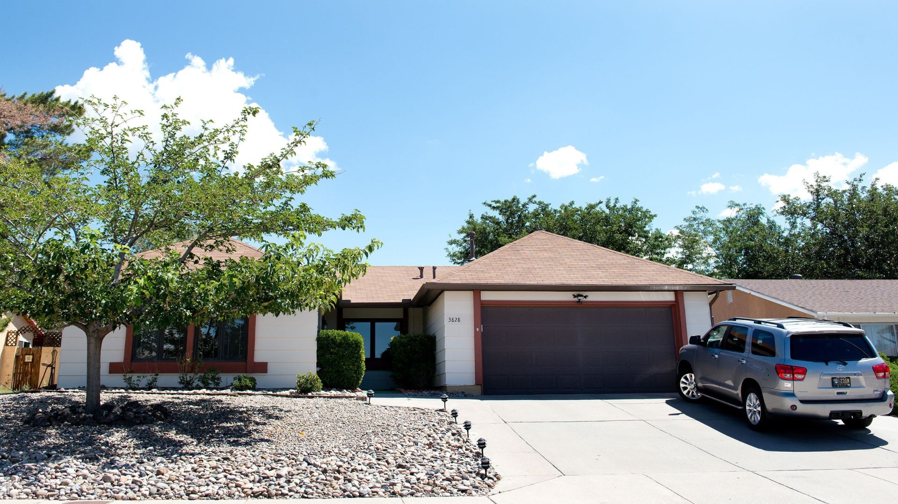
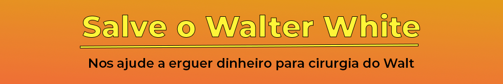
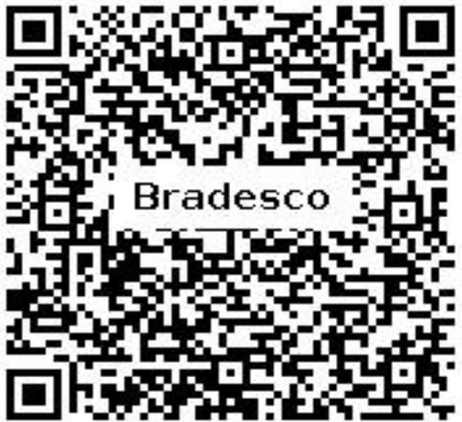

Meu pai é maravilhoso. É engraçado, mas eu não sabia disso até descobrir que ele ia morrer. Que isso era real. Então eu pensei sobre muitas coisas. Coisas em que eu não pensava fazia muito tempo. Eu acho que não o valorizei como deveria, mais ou menos. Quer dizer, nossos pais estão sempre lá. Você espera que eles sempre cobrem que você limpe seu quarto, estude mais, tenha boas maneiras ou conheça coisas novas para amadurecer e ser uma pessoa mais versátil um dia. E fazem você acordar cedo no fim de semana para ter um "tempo com a família" e essas coisas que me deixavam maluco. Eu não me sinto assim agora. Tudo está diferente depois que meu pai foi diagnosticado. Desde que percebi que, um dia, num futuro próximo, ele pode não estar mais por perto.
Agora eu me sinto sortudo quando ele me pergunta como foi meu dia (eu sempre odiei essa pergunta) ou me incomoda para chegar em casa no horário à noite e ser responsável. Um dia ele não vai estar aqui para perguntar. Agora me sinto sortudo quando ouço o carro dele entrando na garagem depois da escola. Eu gosto até de ouvir ele tossir. Isso significa que ele ainda está conosco. Ainda é meu pai.

Meu pai é o professor de química da minha escola e é insuportavelmente chato, quero dizer, cerebralmente chato. Ele sabe as coisas mais aleatórias do mundo. Por exemplo: em temperatura ambiente, o mercúrio é o único metal que fica na forma líquida. A água expande quando a temperatura cai e, quando congela, ocupa 9% a mais de espaço. Ou, se você colocar lentamente uma mão cheia de sal dentro de um copo cheio de água, ela não vai transbordar. Na verdade, o nível da água vai abaixar. Ele está sempre soltando fatos sobre as coisas. Ele não percebe o quão nerd ele é por fazer isso: química realmente é a praia dele. Acho que ele não entende que química não é a praia de todo mundo. Ele gosta de cozinhar por causa da química, e o que mais faz é café da manhã, porque diz que reações químicas acontecem o tempo todo na cozinha. Ele não é meu professor, mas escuto que é um ótimo professor. Ele pratica muito em casa, com certeza.
O tempo todo que estou na escola (estou no segundo ano) eu escutei o que as outras crianças falavam dele. Eu sempre fui conhecido como o filho do Sr. White. (Às vezes o chamavam de Sr. Wallabee, que é o nome do tênis ridículo que ele insistia em usar. Algumas crianças o insultaram só para me irritar. Algumas só o insultavam porque é isso que você faz com professores.) O ponto é que ele espera que todo mundo dê o melhor, igual ele faz, e quando você não tenta dar o melhor, ele não alivia. Era como ele era em casa e na escola. Só agora me dei conta de quão boa é essa qualidade. É isso que o torna tão forte na batalha contra o câncer e o que me deixou forte, mesmo eu sendo mais novo. Mesmo querendo ou não.
De qualquer forma, eu sempre quis ser um aluno mediano na escola, mas, por conta de meu pai ser professor lá, eu era diferente. Eu me dei conta de duas coisas agora. Primeiro, eu já sou diferente porque tenho paralisia cerebral. Segundo, ele é o pai certo para mim. Eu não consigo fazer muito esforço físico por conta da minha deficiência e está tudo bem para meu pai; não teriam muitos outros pais que estariam ok com isso. Outros pais ficariam desapontados porque gostam de esportes e tudo mais. Quer dizer, meu pai não tem deficiência, mas pode ter certeza de que você não quer vê-lo jogando uma bola. Assim, nós nos damos bem. Faz sentido ele ser meu pai e eu ser filho dele. Meu ponto é que eu não ligo mais para o que os alunos da minha escola falam. No final das contas, ele é um bom professor e ninguém pode dizer que ele não liga para o que faz. Eu sei que ele liga. Depois da nossa família, química e ensinar crianças é o que ele ama. Eu só quero ter certeza de que ele possa continuar fazendo o que ama por muito tempo. Por ele, por seus alunos, por mim e pela minha família.
Tem sido um tempo muito difícil para nossa família desde que meu pai desenvolveu o câncer. Não que exista um bom momento para algo tão horrível e assustador, mas com certeza foi um momento péssimo para nós. Minha mãe engravidou do que ela chama de bebê surpresa (a Holly, que, apesar de ser uma recém-nascida, é muito fofinha), e meu pai pegou um trabalho extra depois da escola para tentar ajudar a pagar as contas do mês. E isso foi antes do diagnóstico. Não temos muito dinheiro, mas estávamos indo bem até as contas médicas. E meu pai é muito orgulhoso, sim, muito orgulhoso, e não quer aceitar caridade. É por isso que estou fazendo isso. Não porque quero deixar meu pai bravo ou chateado, mas porque quero que ele tenha a chance de lutar.
Uma coisa que eu não entendo é por que salvar a vida de alguém custa mais do que uma pessoa normal pode pagar. E por que alguns médicos (geralmente os melhores) não aceitam convênios. Eu acho isso errado. Quer dizer, uma das maiores razões pelas quais meu pai não queria se tratar, em primeiro lugar, era porque ele não queria nos deixar com contas para pagar. Esse é o meu pai: ele nos ama mais que tudo. Mais que a si mesmo. Mas queremos ele por perto e queremos que ele tente de tudo para ficar conosco o máximo de tempo possível. A cirurgia é a chance que temos de salvar a vida dele. E não podemos pagar por ela. A cada dia que passa, temos um dia a menos com ele aqui. E eu não quero contar para minha irmãzinha sobre meu pai. Eu quero que ela o conheça por ela mesma.
Que pai incrível eu tenho,
mas ele está em perigo.
É câncer de pulmão.
Ele precisa dessa operação. Agora!
Para ajudar, por favor envie sua contribuição
para nosso fundo operacional
e mantenha meu pai em suas orações!

Escaneie o QR Code para doar

Chave Pix: c91c8dc7-bc54-4d7a-a921-b9d0eec7e58f
Favorecido: Gabriel Silva
Banco: Bradesco
Valor será para manter o site no ar!